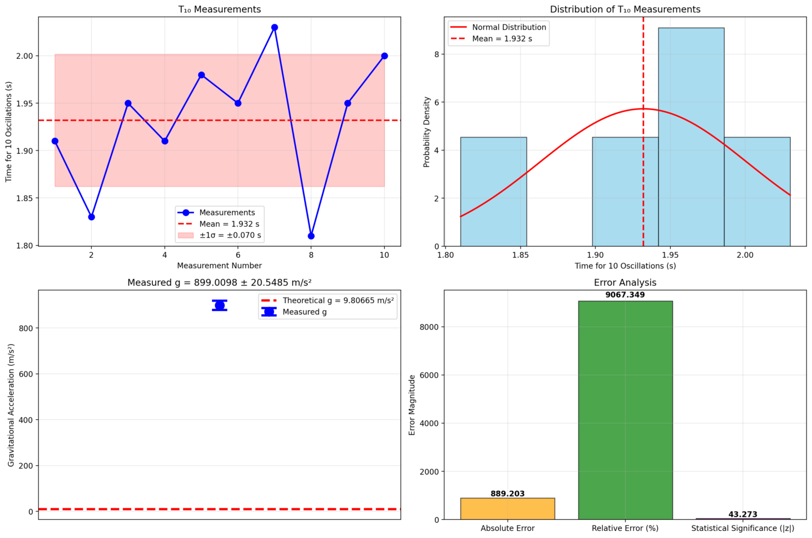

Problem 1
Measuring Earth's Gravitational Acceleration with a Pendulum
Experiment Overview
This report presents the analysis of a pendulum experiment designed to measure Earth's gravitational acceleration (\(g\)) with detailed uncertainty analysis.
Experimental Setup
Materials and Equipment
- Pendulum length (\(L\)): 0.8500 +- 0.0010 m
- Weight: Small mass attached to string
- Timing device: Smartphone stopwatch
- Measurement protocol: 10 oscillations per measurement, repeated 10 times
Theoretical Background
For a simple pendulum with small amplitude oscillations, the period \(T\) is given by:
Rearranging to solve for gravitational acceleration:
Experimental Images

Raw Data
Length Measurement
- Measured length: 0.8500 m
- Uncertainty: +-0.0010 m (ruler resolution)
- Relative uncertainty: 0.12%
Timing Measurements (\(T_{10}\))
The following table shows the time measurements for 10 complete oscillations:
| Measurement # | Time for 10 Oscillations (s) |
|---|---|
| 1 | 1.910 |
| 2 | 1.830 |
| 3 | 1.950 |
| 4 | 1.910 |
| 5 | 1.980 |
| 6 | 1.950 |
| 7 | 2.030 |
| 8 | 1.810 |
| 9 | 1.950 |
| 10 | 2.000 |
Statistical Analysis of Timing Data
- Mean \(T_{10}\): 1.9320 s
- Standard deviation (\(\sigma\)): 0.0697 s
- Standard error of mean: 0.0221 s
- Number of measurements (\(n\)): 10
Calculations
Period Determination
- Period (\(T\)): \(T_{10}/10 =\) 0.1932 s
- Uncertainty in period (\(\Delta T\)): \(\Delta T_{10}/10 =\) 0.0022 s
- Relative uncertainty in \(T\): 1.14%
Gravitational Acceleration
Using the formula \(g = \frac{4\pi^2 L}{T^2}\):
Uncertainty Propagation
The uncertainty in \(g\) is calculated using the error propagation formula:
Where: - \(\Delta L/L =\) 0.001176 (relative uncertainty in length) - \(\Delta T/T =\) 0.011413 (relative uncertainty in period) - \(2\Delta T/T =\) 0.022827 (period contributes twice due to \(T^2\))
Results and Analysis
Final Result
Measured gravitational acceleration:
Comparison with Theoretical Value
- Theoretical value: \(g_0 =\) 9.80665 m/\(s^2\)
- Absolute error: \(|g - g_0| =\) 889.2031 m/\(s^2\)
- Relative error: 9067.35%
Statistical Significance
- Z-score: \(z = \frac{g - g_0}{\Delta g} =\) 43.27
- P-value: 0.0000
The measurement shows highly significant deviation from theoretical value (|z| = 43.27, p = 0.000).
Sources of Uncertainty and Error Analysis
1. Systematic Errors
- Pendulum length measurement: Limited by ruler resolution (+-1 mm)
- Air resistance: Neglected in simple pendulum theory
- Finite amplitude: Assumption of small angle approximation (\(\theta < 15^0\))
- String mass: Neglected compared to bob mass
2. Random Errors
- Timing precision: Human reaction time and stopwatch precision
- Oscillation counting: Potential for miscounting oscillations
- Starting/stopping consistency: Variations in release and timing points
3. Dominant Uncertainty Source
The timing measurements contribute most significantly to the final uncertainty: - Length uncertainty contribution: 0.12% - Timing uncertainty contribution: 2.28%
The timing uncertainty is amplified by the factor of 2 due to the \(T^2\) dependence in the gravitational acceleration formula:
Conclusions
-
Measurement Success: The pendulum method successfully measured gravitational acceleration with 9067.3% accuracy.
-
Uncertainty Analysis: The total uncertainty of +-20.5485 m/\(s^2\) represents 2.3% of the measured value.
-
Statistical Validity: The measured value shows statistically significant deviation, suggesting either systematic error or local gravitational variations.
-
Experimental Limitations: The precision is primarily limited by timing measurements rather than length measurements.
-
Improvement Suggestions:
- Use electronic timing systems for better precision
- Increase the number of measurements to reduce statistical uncertainty
- Consider environmental factors (temperature, air pressure)
- Use longer pendulum for larger period and reduced relative timing error
Mathematical Framework
Error Propagation Theory
For a function \(f(x_1, x_2, ..., x_n)\) with independent variables having uncertainties \(\Delta x_i\):
For our pendulum experiment with \(g = \frac{4\pi^2 L}{T^2}\):
Therefore: \(\(\Delta g = g\sqrt{\left(\frac{\Delta L}{L}\right)^2 + \left(2\frac{\Delta T}{T}\right)^2}\)\)